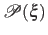
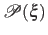
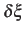
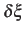
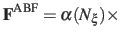

Subsections
For a full description of the Adaptive Biasing Force method, see
reference [7]. For details about this implementation,
see references [8] and [9]. When
publishing research that makes use of this functionality, please cite
references [7] and [9].
An alternate usage of this feature is the application of custom
tabulated biasing potentials to one or more colvars. See
inputPrefix and updateBias below.
ABF is based on the thermodynamic integration (TI) scheme for
computing free energy profiles. The free energy as a function
of a set of collective variables
![$ {\mbox{\boldmath {$\xi$}}}=(\xi_{i})_{i\in[1,n]}$](img153.png) is defined from the canonical distribution of
is defined from the canonical distribution of
 ,
:
,
:
 |
(14) |
In the TI formalism, the free energy is obtained from its gradient,
which is generally calculated in the form of the average of a force
 exerted on
, taken over an iso-
surface:
exerted on
, taken over an iso-
surface:
Several formulae that take the form of (16) have been
proposed. This implementation relies partly on the classic
formulation [10], and partly on a more versatile scheme
originating in a work by Ruiz-Montero et al. [11],
generalized by den Otter [12] and extended to multiple
variables by Ciccotti et al. [13]. Consider a system
subject to constraints of the form
 . Let
(
. Let
(
![$ {\mbox{\boldmath {$v$}}}_{i})_{i\in[1,n]}$](img160.png) be arbitrarily chosen vector fields
(
be arbitrarily chosen vector fields
(
 ) verifying, for all
) verifying, for all  ,
,
 , and
, and  :
:
then the following holds [13]:
 |
(18) |
where  is the potential energy function.
is the potential energy function.
 can be interpreted as the direction along which the force
acting on variable
can be interpreted as the direction along which the force
acting on variable  is measured, whereas the second term in the
average corresponds to the geometric entropy contribution that appears
as a Jacobian correction in the classic formalism [10].
Condition (17) states that the direction along
which the system force on is measured is orthogonal to the
gradient of
is measured, whereas the second term in the
average corresponds to the geometric entropy contribution that appears
as a Jacobian correction in the classic formalism [10].
Condition (17) states that the direction along
which the system force on is measured is orthogonal to the
gradient of  , which means that the force measured on
does not act on .
, which means that the force measured on
does not act on .
Equation (18) implies that constraint forces
are orthogonal to the directions along which the free energy gradient is
measured, so that the measurement is effectively performed on unconstrained
degrees of freedom.
In NAMD, constraints are typically applied to the lengths of
bonds involving hydrogen atoms, for example in TIP3P water molecules (parameter rigidBonds).
In the framework of ABF,
 is accumulated in bins of finite size
,
thereby providing an estimate of the free energy gradient
according to equation (16).
The biasing force applied along the collective variables
to overcome free energy barriers is calculated as:
is accumulated in bins of finite size
,
thereby providing an estimate of the free energy gradient
according to equation (16).
The biasing force applied along the collective variables
to overcome free energy barriers is calculated as:
   |
(19) |
where

 denotes the current estimate of the
free energy gradient at the current point
in the collective
variable subspace, and
denotes the current estimate of the
free energy gradient at the current point
in the collective
variable subspace, and
 is a scaling factor that is ramped
from 0 to 1 as the local number of samples
is a scaling factor that is ramped
from 0 to 1 as the local number of samples  increases
to prevent nonequilibrium effects in the early phase of the simulation,
when the gradient estimate has a large variance.
See the fullSamples parameter below for details.
increases
to prevent nonequilibrium effects in the early phase of the simulation,
when the gradient estimate has a large variance.
See the fullSamples parameter below for details.
As sampling of the phase space proceeds, the estimate
is progressively refined. The biasing
force introduced in the equations of motion guarantees that in
the bin centered around
,
the forces acting along the selected collective variables average
to zero over time. Eventually, as the undelying free energy surface is canceled
by the adaptive bias, evolution of the system along
is governed mainly by diffusion.
Although this implementation of ABF can in principle be used in
arbitrary dimension, a higher-dimension collective variable space is likely
to result in sampling difficulties.
Most commonly, the number of variables is one or two.
ABF requirements on collective variables
- Only linear combinations of colvar components can be used in ABF calculations.
- Availability of system forces is necessary. The following colvar components
can be used in ABF calculations:
distance, distance_xy, distance_z, angle,
dihedral, gyration, rmsd and eigenvector.
Atom groups may not be replaced by dummy atoms, unless they are excluded
from the force measurement by specifying oneSiteSystemForce, if available.
- Mutual orthogonality of colvars. In a multidimensional ABF calculation,
equation (17) must be satisfied for any two colvars and .
Various cases fulfill this orthogonality condition:
- and are based on non-overlapping sets of atoms.
- atoms involved in the force measurement on do not participate in
the definition of . This can be obtained using the option oneSiteSystemForce
of the distance, angle, and dihedral components
(example: Ramachandran angles
 ,
,  ).
).
- and are orthogonal by construction. Useful cases are the sum and
difference of two components, or distance_z and distance_xy using the same axis.
- Mutual orthogonality of components: when several components are combined into a colvar,
it is assumed that their vectors
(equation (19))
are mutually orthogonal. The cases described for colvars in the previous paragraph apply.
- Orthogonality of colvars and constraints: equation 18 can
be satisfied in two simple ways, if either no constrained atoms are involved in the force measurement
(see point 3 above) or pairs of atoms joined by a constrained bond are part of an atom group
which only intervenes through its center (center of mass or geometric center) in the force measurement.
In the latter case, the contributions of the two atoms to the left-hand side of equation 18
cancel out. For example, all atoms of a rigid TIP3P water molecule can safely be included in an atom
group used in a distance component.
ABF depends on parameters from collective variables to define the grid on which free
energy gradients are computed. In the direction of each colvar, the grid ranges from
lowerBoundary to upperBoundary, and the bin width (grid spacing)
is set by the width parameter (see 3.1).
The following specific parameters can be set in the ABF configuration block
(in addition to generic bias parameters such as colvars
- section 6):
-
fullSamples
 Number of samples in a bin prior
to application of the ABF
Number of samples in a bin prior
to application of the ABF
Context: abf
Acceptable values: positive integer
Default value: 200
Description: To avoid nonequilibrium effects due to large fluctuations of the force exerted along the
colvars, it is recommended to apply a biasing force only after a the estimate has started
converging. If fullSamples is non-zero, the applied biasing force is scaled by a factor
between 0 and 1.
If the number of samples in the current bin is higher than fullSamples,
the factor is one. If it is less than half of fullSamples, the factor is zero and
no bias is applied. Between those two thresholds, the factor follows a linear ramp from
0 to 1:
 .
.
-
maxForce Maximum magnitude of the ABF force
Context: abf
Acceptable values: positive decimals (one per colvar)
Default value: disabled
Description: This option enforces a cap on the magnitude of the biasing force effectively applied
by this ABF bias on each colvar. This can be useful in the presence of singularities
in the PMF such as hard walls, where the discretization of the average force becomes
very inaccurate, causing the colvar's diffusion to get ``stuck'' at the singularity.
To enable this cap, provide one non-negative value for each colvar. The unit of force
is kcal/mol divided by the colvar unit.
-
hideJacobian Remove geometric entropy term from calculated
free energy gradient?
Context: abf
Acceptable values: boolean
Default value: no
Description: In a few special cases, most notably distance-based variables, an alternate definition of
the potential of mean force is traditionally used, which excludes the Jacobian
term describing the effect of geometric entropy on the distribution of the variable.
This results, for example, in particle-particle potentials of mean force being flat
at large separations.
Setting this parameter to yes causes the output data to follow that convention,
by removing this contribution from the output gradients while
applying internally the corresponding correction to ensure uniform sampling.
It is not allowed for colvars with multiple components.
-
outputFreq Frequency (in timesteps) at which ABF data files are refreshed
Context: abf
Acceptable values: positive integer
Default value: Colvar module restart frequency
Description: The files containing the free energy gradient estimate and sampling histogram
(and the PMF in one-dimensional calculations) are written on disk at the given
time interval.
-
historyFreq Frequency (in timesteps) at which ABF history files are
accumulated
Context: abf
Acceptable values: positive integer
Default value: 0
Description: If this number is non-zero, the free energy gradient estimate and sampling histogram
(and the PMF in one-dimensional calculations) are appended to files on disk at
the given time interval. History file names use the same prefix as output files, with
``.hist'' appended.
-
inputPrefix Filename prefix for reading ABF data
Context: abf
Acceptable values: list of strings
Description: If this parameter is set, for each item in the list, ABF tries to read
a gradient and a sampling files named  inputPrefix
inputPrefix .grad
and inputPrefix.count. This is done at
startup and sets the initial state of the ABF algorithm.
The data from all provided files is combined appropriately.
Also, the grid definition (min and max values, width) need not be the same
that for the current run. This command is useful to piece together
data from simulations in different regions of collective variable space,
or change the colvar boundary values and widths. Note that it is not
recommended to use it to switch to a smaller width, as that will leave
some bins empty in the finer data grid.
This option is NOT compatible with reading the data from a restart file (colvarsInput option of the NAMD config file).
.grad
and inputPrefix.count. This is done at
startup and sets the initial state of the ABF algorithm.
The data from all provided files is combined appropriately.
Also, the grid definition (min and max values, width) need not be the same
that for the current run. This command is useful to piece together
data from simulations in different regions of collective variable space,
or change the colvar boundary values and widths. Note that it is not
recommended to use it to switch to a smaller width, as that will leave
some bins empty in the finer data grid.
This option is NOT compatible with reading the data from a restart file (colvarsInput option of the NAMD config file).
-
applyBias Apply the ABF bias?
Context: abf
Acceptable values: boolean
Default value: yes
Description: If this is set to no, the calculation proceeds normally but the adaptive
biasing force is not applied. Data is still collected to compute
the free energy gradient. This is mostly intended for testing purposes, and should
not be used in routine simulations.
-
updateBias Update the ABF bias?
Context: abf
Acceptable values: boolean
Default value: yes
Description: If this is set to no, the initial biasing force (e.g. read from a restart file or
through inputPrefix) is not updated during the simulation.
As a result, a constant bias is applied. This can be used to apply a custom, tabulated
biasing potential to any combination of colvars. To that effect, one should prepare
a gradient file containing the gradient of the potential to be applied (negative
of the bias force), and a count file containing only values greater than
fullSamples. These files must match the grid parameters of the colvars.
The ABF bias produces the following files, all in multicolumn ASCII format:
- output.grad: current estimate of the free energy gradient (grid),
in multicolumn;
- output.count: total number of samples collected, on the same grid;
- output.pmf: only for one-dimensional calculations, integrated
free energy profile or PMF.
If several ABF biases are defined concurrently, their name is inserted to produce
unique filenames for output, as in output.abf1.grad.
This should not be done routinely and could lead to meaningless results:
only do it if you know what you are doing!
If the colvar space has been partitioned into sections (windows) in which independent
ABF simulations have been run, the resulting data can be merged using the
inputPrefix option described above (a run of 0 steps is enough).
If a one-dimensional calculation is performed, the estimated free energy
gradient is automatically integrated and a potential of mean force is written
under the file name <outputName>.pmf, in a plain text format that
can be read by most data plotting and analysis programs (e.g. gnuplot).
In dimension 2 or greater, integrating the discretized gradient becomes non-trivial. The
standalone utility abf_integrate is provided to perform that task.
abf_integrate reads the gradient data and uses it to perform a Monte-Carlo (M-C)
simulation in discretized collective variable space (specifically, on the same grid
used by ABF to discretize the free energy gradient).
By default, a history-dependent bias (similar in spirit to metadynamics) is used:
at each M-C step, the bias at the current position is incremented by a preset amount
(the hill height).
Upon convergence, this bias counteracts optimally the underlying gradient;
it is negated to obtain the estimate of the free energy surface.
abf_integrate is invoked using the command-line:
integrate <gradient_file> [-n <nsteps>] [-t <temp>] [-m (0|1)]
[-h <hill_height>] [-f <factor>]
The gradient file name is provided first, followed by other parameters in any order.
They are described below, with their default value in square brackets:
- -n: number of M-C steps to be performed; by default, a minimal number of
steps is chosen based on the size of the grid, and the integration runs until a convergence
criterion is satisfied (based on the RMSD between the target gradient and the real PMF gradient)
- -t: temperature for M-C sampling (unrelated to the simulation temperature)
[500 K]
- -m: use metadynamics-like biased sampling? (0 = false) [1]
- -h: increment for the history-dependent bias (``hill height'') [0.01 kcal/mol]
- -f: if non-zero, this factor is used to scale the increment stepwise in the
second half of the M-C sampling to refine the free energy estimate [0.5]
Using the default values of all parameters should give reasonable results in most cases.
abf_integrate produces the following output files:
- <gradient_file>.pmf: computed free energy surface
- <gradient_file>.histo: histogram of M-C sampling (not
usable in a straightforward way if the history-dependent bias has been applied)
- <gradient_file>.est: estimated gradient of the calculated free energy surface
(from finite differences)
- <gradient_file>.dev: deviation between the user-provided numerical gradient
and the actual gradient of the calculated free energy surface. The RMS norm of this vector
field is used as a convergence criteria and displayed periodically during the integration.
Note: Typically, the ``deviation'' vector field does not
vanish as the integration converges. This happens because the
numerical estimate of the gradient does not exactly derive from a
potential, due to numerical approximations used to obtain it (finite
sampling and discretization on a grid).
Jérôme Hénin
2015-03-03